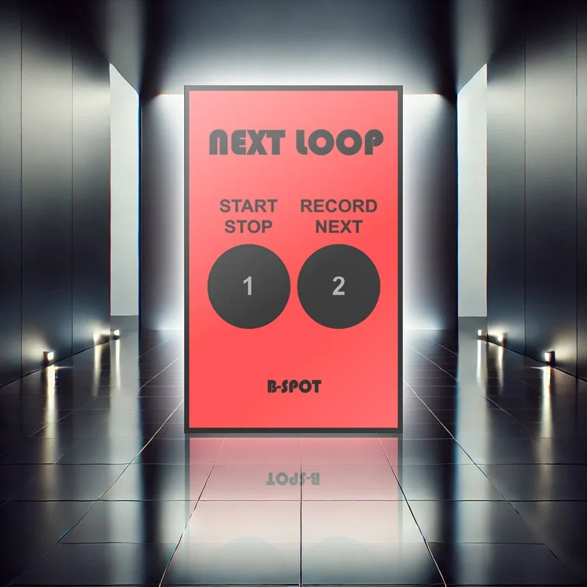
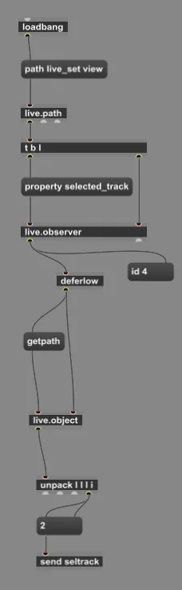
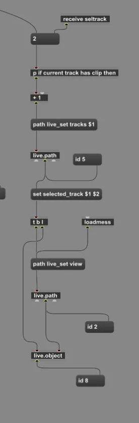
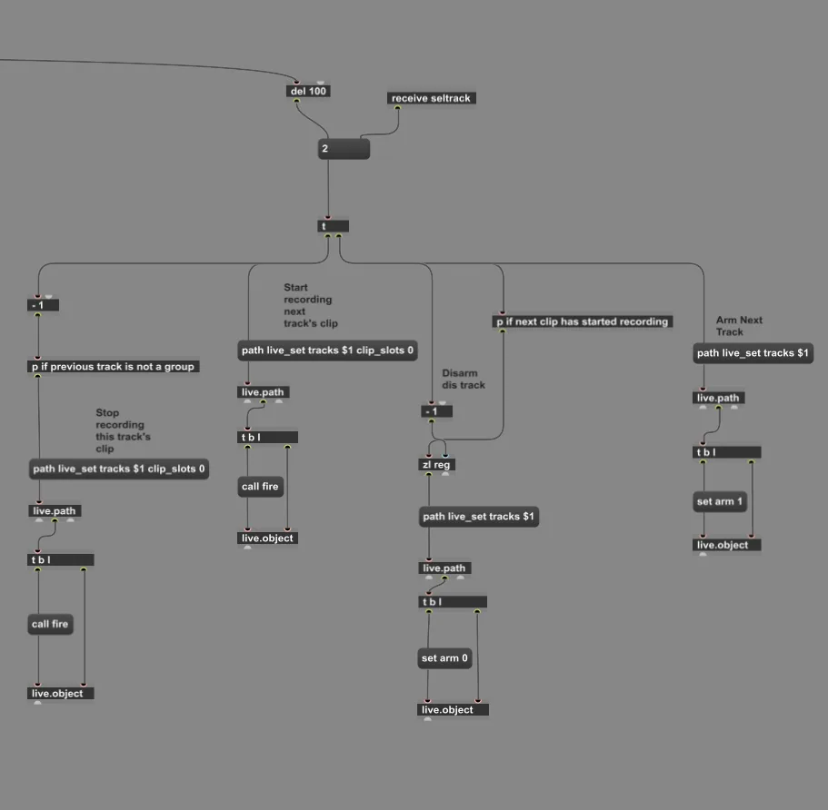

Next Loop
A looping device for Ableton Live.

This device was made for looping inside Ableton Live. It can be added as a Max for Live device and does the following.
The first button works as start/stop. It reads the first clip on the selected track: if there is no clip it starts recording one, and if a clip is already recording it stops the recording.
The second button works as a looper and does the following:
- Finds the selected track.
- If there is no clip, it arms the selected track and starts recording the first clip.
- Pressed again, it disarms the selected track and stops its recording, then arms and selects the next track and starts recording there.
- If the next track already has a clip, it doesn't erase it; it simply starts playing it.
The device's code


